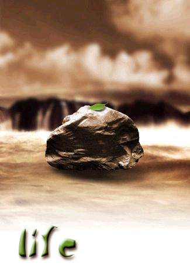

|  |
|
《生存》这幅图片反映了人类对于生存的渴 望。尽管只有一小片绿叶，却象征着生的希望。 在恶劣阴沉的天气下，在湍急汹涌的激流中只有 当中的那块岩石可以立足，在这样的情况下不免 让你有些担心。担心像这样幼小青嫩的绿叶是否 会落入水中。然而当你看到它为了生存仍然十分 坚强的屹立在岩石上时，让你不得不对它投射出 钦佩的目光。同时也鼓励你在任何环境下遇到困 难都要勇于面对和克服。刚看到这幅图片时，满 眼都是棕黄色，而唯一吸引你视线的就是那一小 片树叶和嫩绿色的“life”。life采用小写字体 是为了体现叶子的小巧和极富生命力，使你很快 就联想到生命和对生存的渴望。 |